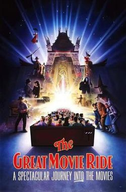
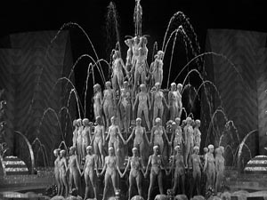
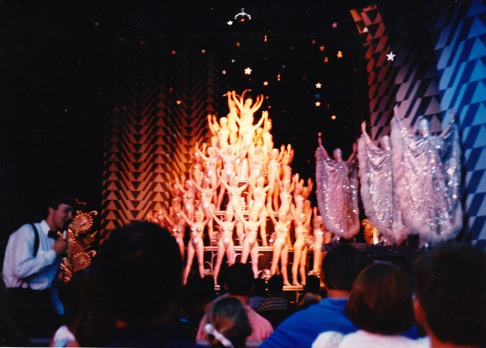
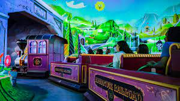

 The Great Movie Ride was an emmersive dark ride attraction that featured over 50 animatronics of actors and actresses in old Hollywood films. Each scene gave guests a glimpse into different films, with realistic set pieces and animatronics with faces very similar to that of the character. The ride begins with musical movies, first being Footlight Parade. The scene features the iconic 5 teir "cake" from the "By the Waterfall" number in the film. When the ride first opened in 1989, on opening day at Disney's Hollywood Studios, the cake was nearly identical to that in the film, with the platforms all rotating, and water effects spewing from all around the fountain. But, just like many large, impressive features, this one was also prone to malfunctions and major issues.
"not worth the maintenance costs" The "cake" was a brilliant idea by imagineers to get the ride started. It served as a beginning of the jump into the world of movies, starting out with something spectactular, and therefore setting the scene for the rest of the attraction. The cake was lifesize, with many identical figures of women populating the layers, just like in the film (only this time, the cake had statues rather than real people). As the cake rotated, water squirtd like a fountain from various parts of the fountain, matching the film rather well. Unfortunately though, incidents with the scene occured shortly after opening. Since the water effects ran for 12-15 hours a day, the collection tanks for the water in the fountain overflowed, resulting in a flood of the  scene, as well as the track area. This led to the water effect being removed, since there was not really a good way to fix the issue, and upon further investigation, imagineers discovered a mold buildup from the fountains, and water damage beginning to destroy the base of the structure. But, the water effect was not the only issue in this giant structure.
As time went on, imagineers kept a closer eye on this scene in the attraction because of its previous problems. Only a few months later, maintnence staff began to notice cracks in the concrete flooring as a result of the pressure caused by the movement of the large cake. Since there would be no way to fix this other than removing the cake entirely, building a new floor, and making modifications to the cake to lessen its weight,  imagineers had no choice but to turn the extravigant rotating cake off, but they didn't stop here. They then removed the extra women figures who were previously perched on diving boards, stopped the effect that blew bubbles into the air as the song played, and placed a mesh barrier between guests and the stationary cake to limit view of it, as it was no longer as impressive as it once was.
As seen in this video taken on opening day of the attraction, the cake is fully rotating and completely visible to guests. Lights and backgrounds add to the scene making the scene a true extravaganza.
As seen in this video taken 2017, right before the attraction closed forever, the cake is blocked off from guests, just like it had been for years, and is 100% stationary, with no extra effects to make the scene more extravagant.
 The Great Movie Ride ran from May 1, 1989 to August 13, 2017 when it closed forever. The ride was to be replaced with a Mickey Mouse themed attraction, much to the dismay of fans. The Great Movie Ride had experienced lots of wear throughout its 28 year run, and imagineers determined that it no longer belonged in Hollywood Studios. Every animatronic figure was removed and scattered around the country (some went to the actors of whom they protrayed and others were placed in the Disney archives). The cake was also removed to make way for a rodeo scene in the Mickey ride, meaning the Footlight Parade scene was never returned to its former glory.